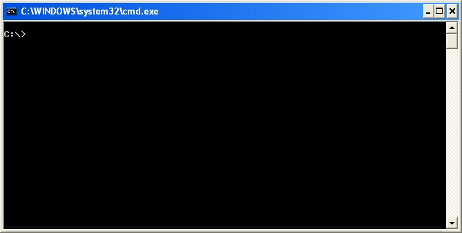
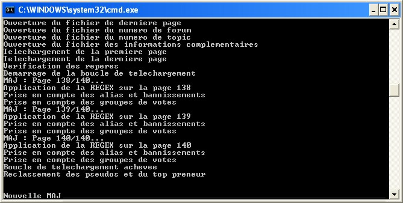
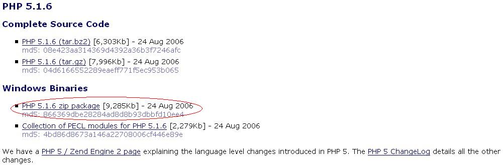
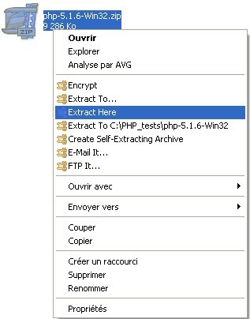
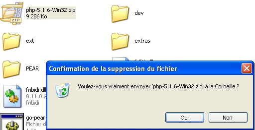
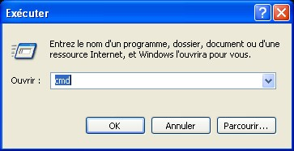
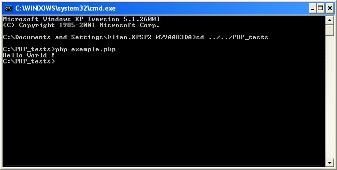
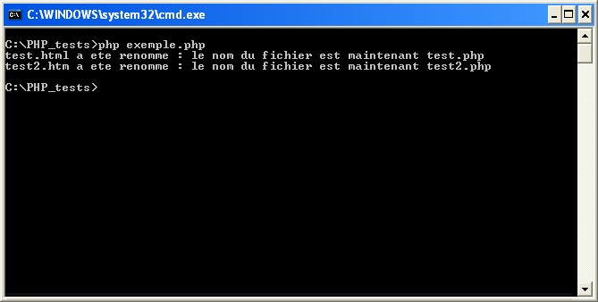
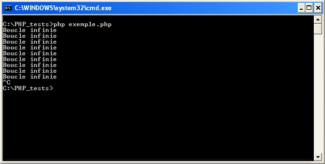
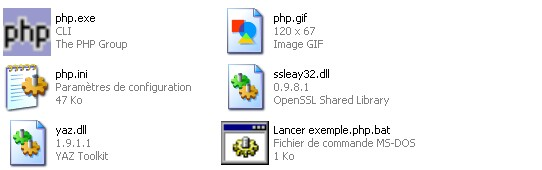

Jusque là, on vous a toujours dit que le PHP était un langage côté serveur, c'est-à-dire qui ne servait surtout qu'à générer des pages en (X)HTML. C'est bien sûr exact, et cela reste sa principale utilisation. Cependant...
En devant renommer une bonne centaine de fichiers, vous ne vous êtes jamais dit : "Ah, si je pouvais faire un script en PHP qui pouvait tous les renommer, ça irait bien plus vite !" ? Non ? :p
Eh bien effectivement, cela irait beaucoup plus vite, et c'est possible. En effet, grâce à l'exécution de PHP en CLI, des tas de possibilités s'ouvrent... :D
Ce tuto est centré sur les utilisateurs de Windows. Toutefois, les utilisateurs d'autres systèmes d'exploitation peuvent facilement s'en servir pour exécuter des scripts PHP en CLI, avec quelques légères modifications du côté du téléchargement de PHP.
Littéralement, cela signifie "Command-Line Interface" : autrement dit, une fois traduit, "Interface en Ligne de Commande". Vous avez peut-être déjà vu une console (pas une console de jeux :p ), non ? En voici une :

Lorsque vous aurez appris à créer des scripts PHP exécutés en CLI, il se peut que certains d'entre eux ne durent qu'une fraction de seconde. D'autres, en revanche, vous laisseront admirer cette console, qui pourra se révéler utile, surtout pour le débuggage. ;)
Pour vous encourager à lire la suite, voici un aperçu de l'un de mes propres scripts PHP exécutés de cette manière. Il sert à comptabiliser des votes au sein d'un forum particulier.

Avant de commencer à tester des scripts de ce genre, il vous faudra télécharger PHP, car votre ordinateur n'est pas capable d'interpréter du PHP. Pour ce faire, rendez-vous sur la page des téléchargements de php.net en cliquant ici. Choisissez la version la plus récente de PHP. A l'heure où est écrit ce tuto, c'est la version 5.1.6. Si vous êtes sous Windows, choisissez le lien vers les "Windows Binaries", puis choississez un miroir (français, de préférence, ou gare à la vitesse du téléchargement :p ) et téléchargez le fichier .zip.

Une fois l'archive téléchargée, créez un nouveau dossier dans la racine de votre disque dur (C:, la plupart du temps). J'expliquerai plus tard pourquoi créer le dossier à la racine du disque est plus pratique. Extrayez ensuite l'archive dans ce nouveau dossier, que j'ai personnellement appelé "PHP_tests".
Exemple avec PowerArchiver :

Une fois ceci fait, vous pouvez déjà supprimer les fichiers et dossiers inutiles pour une exécution en CLI. Voici ce que vous pouvez effacer sans crainte :
dev
extras
PEAR
go-pear.bat
install.txt
news.txt
php-cgi.exe
php-win.exe
php.ini-dist
php5embed.lib
pws-php5cgi.reg
pws-php5isapi.reg
snapshot.txt
Ensuite, créez un nouveau fichier, et renommez-le pour qu'il ait une extension en .php. Choisissez le nom qui vous conviendra. Pourquoi pas "exemple.php", pour un début ? Autre chose à faire : renommez le fichier "php.ini-recommended" en "php.ini".
Vous avez à présent tous les outils nécessaires pour créer votre propre script en PHP, exécuté en CLI !
Maintenant que vous pouvez techniquement faire tourner des scripts PHP sur votre ordinateur, si on essayait un petit Hello World ?
Pour cela, rien de plus simple. Ouvrez le fichier en .php que vous avez créé précédemment, à l'aide de votre éditeur qui vous sert habituellement à scripter en PHP (Bloc-Notes, NotePad++, DreamWeaver, etc). Ensuite, comme d'habitude, mettez les tags PHP, et ajoutez, tout bêtement, un echo ou un print, avec comme paramètre la chaîne "Hello World !".
<?php
print
("Hello World !"); // Je préfère print, mais echo a aussi souvent la cote :)
?>
Enregistrez et fermez. Voilà, votre Hello World est prêt à être testé !
Mais comment le parser ?
C'est là qu'intervient tout ce qu'on a téléchargé. Rappelez-vous, tous les fichiers, scripts compris, sont dans un dossier à la racine de votre disque. Imaginons que vous ayez nommé le script "exemple.php" et le dossier "PHP_tests", dans la racine du lecteur C:. Il va falloir utiliser l'application php.exe dans ce répertoire, mais en lui passant un paramètre. On pourrait créer un raccourci, mais ça serait bien trop fastidieux. Pour le moment, on va utiliser la console, mais plus tard, j'expliquerai comment se passer de cette console.
Rendez-vous dans démarrer, cliquez sur Exécuter, tapez "cmd" et validez.

Vous obtenez une superbe console. :D Ne rêvez quand même pas, ce n'est pas une console de jeux, comme je l'ai déjà dit. :p Seulement, la console affiche un répertoire, et ce n'est pas le bon. Nous allons donc nous replacer dans le bon répertoire. Pour ce faire, tapez ceci :
cd ../../PHP_tests
Appuyez ensuite sur Entrée. Si ça n'a pas marché, tapez "cd .." puis Entrée, jusqu'à ce que vous atteignez C:. Tapez ensuite "cd PHP_tests". "PHP_tests" doit bien sûr être remplacé par le nom du dossier que vous avez crée à la racine de C:.
Une fois placé dans le bon dossier, tapez simplement ceci :
php exemple.php
"exemple.php" devant être remplacé par le nom de votre script PHP chargé d'afficher "Hello World !". Et miracle, voici le résultat o_O :

Évidemment, si echo et print fonctionnent, une grande partie des fonctions PHP vont être tout aussi efficaces en CLI que en CGI (le "mode serveur web"). ^^ Toutefois, comme indiqué à cet endroit sur php.net, il existe quelques légères différences... Voici un petit résumé de ces différences :
si vous avez manipulé des headers dans un script pour un site web, ne comptez pas pouvoir faire de même avec PHP en mode CLI, pour des raisons évidentes ; aucun header n'est envoyé nulle part !
Contrairement à la version CGI, la version CLI de PHP ne transforme pas le répertoire du script en répertoire courant. Si vous manipulez les fichiers de votre ordinateur, il faudra donc taper leur adresse en absolu, ou bien faire du répertoire du script le répertoire courant.
Lorsqu'une erreur se produit avec un script exécuté en CGI, le message d'erreur est formaté en HTML avant d'être placé dans la source, afin de rendre l'erreur plus facilement lisible. Évidemment, en CLI, formater les erreurs en HTML n'aurait pas de sens, elles sont donc affichées en texte brut, en on ne peut changer ceci.
Si vous utilisiez l'option implicit_flush dans le fichier php.ini de votre serveur web, sachez que cette option n'est pas activable en CLI.
Un script exécuté en CGI a un temps d'exécution limité (souvent 30 secondes), afin de ne pas surcharger le serveur web. Cette limite n'ayant pas de sens en CLI, elle n'existe pas lorsque vous exécutez un script de cette manière.
Comme dans des langages de programmation tels que le C, il peut être utile de pouvoir exécuter un script en mode CLI de plusieurs manières, $argv et $argc existent donc dans ce mode. Le sujet sera abordé plus tard.
Comme dans des langages de programmation tels que le C, des pointeurs de fichiers sont déjà ouverts dès l'exécution d'un script en CLI. Les constantes STDIN, STDOUT et STDERR peuvent donc être utilisées par des fonctions telles que fgets ou fputs, de la même manière qu'est utilisé un pointeur de fichier renvoyé par des fonctions comme fopen. Il est également inutile de les refermer à l'aide de fclose, ceci étant fait automatiquement à la fin du script.
N'oubliez pas que la console de Windows ne gère pas les accents ! Faites donc attention lorsque vous utilisez echo ou print...
A présent, vous savez créer un petit script et l'exécuter en CLI.
Maintenant que je sais faire de tels scripts, qu'est-ce que je peux bien faire ?
Les scripts en CLI ont souvent une utilité bien différente de celle des scripts en CGI. On les utilise parfois pour accomplir des tâches brèves, ou des tâches "automatisées". Un des principaux défauts des scripts en CLI est qu'on ne peut pas interagir directement avec l'utilisateur autrement qu'avec STDIN, qui se révèle limité. Il existe des solutions face à ce problème, comme PHP-GTK, mais elles sont souvent complexes.
Pour interagir avec l'utilisateur, voici le code PHP :
<?php
$reponse = fgets(STDIN);
?>
On peut tout d'abord utiliser PHP en CLI pour gérer des fichiers et / ou des dossiers. Les fonctions "Système de Fichiers" sont donc très utiles dans ce cas-là. Par exemple, si vous avez un millier de fichiers à renommer, l'utilisation de PHP en CLI peut être judicieuse. Si vous voulez renommer un millier de fichiers .html en fichiers .php, qui seraient situés dans le dossier "fichiers" situé dans un dossier (contenant le script) à la racine de votre disque dur, il suffit de taper un script pour scanner le répertoire "fichiers", et renommer tous les fichiers .htm(l) s'y trouvant. Exemple de script :
<?php
if(($array = scandir(getcwd()."/fichiers")) !== false)
{
foreach($array as $key => $content)
{
if($content != "." && $content != ".." && preg_match("`.html?$`", $content) == 1)
{
$newname = preg_replace("`.html?$`", ".php", $content);
rename(getcwd()."/fichiers/".$content, getcwd()."/fichiers/".$newname);
print($content." a ete renomme : le nom du fichier est maintenant ".$newname."n");
}
}
}
?>
Essayons avec 3 fichiers :
test.html
test2.htm
test3.ht (pour vérifier que ce fichier-ci n'est pas renommé).

Et lorsqu'on regarde à nouveau les 3 fichiers, on a à présent :
test.php
test2.php
test3.ht.
Pourquoi avoir mis le caractère "n" dans la fonction print ; à quoi sert-il ?
Ce caractère est un saut de ligne. Lors d'une utilisation "traditionnelle" de PHP en CGI, on met rarement des sauts de ligne, en PHP. En effet, ceux-ci sont visibles uniquement dans le code source HTML généré, contrairement à <br>. Or, en CLI, la console n'est pas soumise à l'HTML. C'est un peu comme si on "lisait directement la source". Un saut de ligne sera donc visible, et empêcheront les messages d'être collés. :)
Si je me trompe dans mon script et que je mets une boucle infinie, comment arrêter tout ça ? :euh:
Il suffit de faire la combinaison de touches CTRL + C pour stopper le script à tout moment. ;)

Les scripts CLI ne servent-ils donc qu'à accélérer la manipulation de fichiers ?
Pas du tout ! Les possibilités, limitées seulement par votre imagination, sont quasi-infinies ; presque toutes les fonctions de PHP sont utilisables dans ce mode ! Vous pouvez, par exemple, manipuler des pages web distantes (en lecture seule, bien sûr). Il existe beaucoup d'usages de PHP en CLI dans ce sens, comme des statistiques pour des forums. Pour accéder à Internet, quelque soit le mode de fonctionnement de PHP, l'une des meilleures solutions est d'utiliser cURL. Toutefois, le plus grand atout de PHP en CLI est l'absence de limite de temps. Vous pouvez à présent tenter de transformer votre ordinateur en une sorte de serveur (stoppable à tout moment). Un des meilleurs exercices que je pourrais vous proposer serait de vous servir du tuto sur les sockets d'Azmeuk pour apprendre comment créer un chat par le biais des sockets en CGI, puis de réaliser ce genre de chat avec un script serveur exécuté en CLI, afin de se débarrasser de la limite du temps d'exécution de la plupart des serveurs web pour avoir un serveur de chat fonctionnel.
A un niveau beaucoup plus relevé, cette fois-ci, vous pourriez utiliser les sockets pour réaliser un bot pour un jeu vidéo, même si à ce stade, on utiliserait PHP-GTK.
Avant de bondir sur php.net et les autres tutos PHP pour trouver des idées d'utilisation, mieux vaut lire encore un peu ce tuto-ci, car pour le moment, exécuter un script PHP en CLI est très lourd.
Vous savez déjà comment exécuter un script PHP en CLI. Toutefois, il vaut mieux que vous connaissiez le moyen permettant d'exécuter de tels scripts bien plus rapidement.
Vous pouvez tout de suite déplacer le dossier dans lequel se trouve le script pour le mettre n'importe où, comme sur le bureau. En effet, sans console à gérer, le script sera facilement exécutable de partout. Créez ensuite un nouveau fichier texte. Inutile de lui donner un nom précis pour le moment, on le renommera plus tard. A l'intérieur de ce fichier texte, tapez tout simplement :
php exemple.php
Remplacez exemple.php par le nom de votre script. Ensuite, enregistrez et fermez le fichier texte, puis renommez-le sous n'importe quel nom. Une seule obligation : l'extension doit être en .bat.

Double-cliquez ensuite sur le fichier .bat... Incroyable, la console a trouvé le script toute seule. o_O :D
Abordons à présent un sujet lié au fichier .bat : les arguments. Comme en C, on peut passer une liste d'arguments au script. Celui-ci peut ensuite les gérer.
Comme le fichier .bat est de loin le plus pratique pour lancer le script rapidement, je ne m'attarderai que sur lui. Pour passer des arguments au script à partir du fichier .bat, il suffit de les ajouter à la suite de la ligne déjà remplie, en séparant chaque argument par un espace. Exemple :
php exemple.php argument1 Argument2 argumentTrois
Bien sûr, il faut ensuite gérer ces arguments côté script. Là aussi, c'est très facile : les arguments sont stockés dans la variable superglobale, $_SERVER, plus précisément dans l'array $_SERVER['argv']. Le premier argument sera $_SERVER['argv'][0], le second sera $_SERVER['argv'][1], etc. Le nombre d'arguments est aussi stocké, dans $_SERVER['argc'].
Si vous voulez utiliser toutes les fonctionalités de PHP, comme les sockets, MySQL, cURL, etc, n'oubliez pas que vous devez activer les extensions correspondantes en ôtant le point-virgule (";") devant leur DLL, dans php.ini. Pour trouver facilement la zone correspondante dans le gros fichier, faite simplement une recherche sur "mysql" avec l'outil de recherche du bloc-notes, les DLL à activer ou non devraient être à proximité de la première occurrence. Si vous n'activez pas une fonctionnalité, les fonctions PHP correspondantes ne seront pas définies.
Si savoir exécuter un script PHP en CLI n'est pas indispensable, cela peut se révéler quand même très utile. Évidemment, si vous maîtrisez complètement le C, le C++ ou n'importe quel autre langage de programmation, PHP ne fera pas le poids. :p Cependant, PHP est bien plus facile et rapide à utiliser que ces langages. De plus, s'entraîner avec PHP exécuté en CLI peut aider à mieux comprendre certains concepts en programmation, surtout si vous vous intéressez de près à PHP-GTK, qui permet de scripter de manière événementielle (le script est "en attente" d'un évènement, provenant souvent de l'utilisateur) et de manier des widgets. ^^